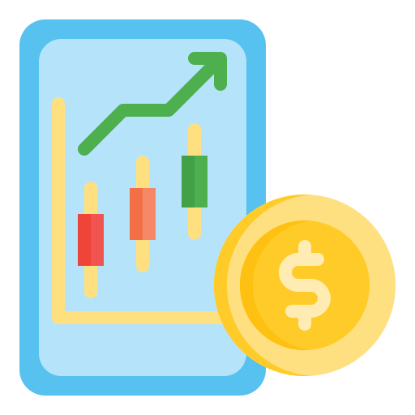
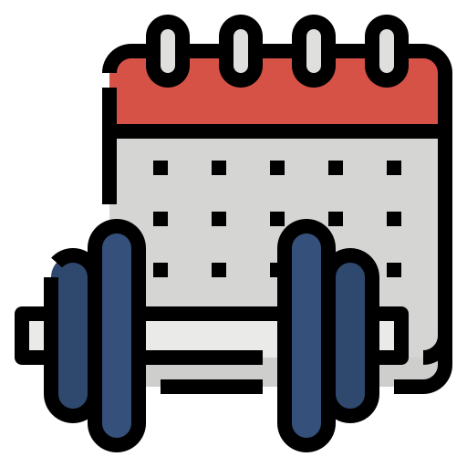

Password Manager
The password manager project is a program called MyPass that is built using tkinter. It is designed to store and generate passwords locally on a computer, as opposed to using an internet-based service. The program allows users to enter the name of the website, email, and prepopulated username into the password manager. Users can either come up with a password that meets the website's requirements or use the built-in password generator to create a complex, long password with numbers and symbols. Once the data is entered, users can click add to save the information in a text file on their computer.The program includes basic validations, such as alerts when a field is left empty, and it also saves passwords to the clipboard, making it easy for users to paste them into the password field on a website.The program not only stores and generates passwords but also allows users to quickly and easily retrieve them when needed when they type the username and password

Habit Tracker
The habit tracker project is inspired by Simone Giertz's physical habit tracker, and aims to build a digital version using technology. The program uses an API called Pixela, created by a Japanese developer, to track daily habits and intensity. Users can choose any habit they want to track, such as cycling, coding, or meditating, and log their progress day by day. The program shows a visual representation of the progress over time, with different colors indicating the intensity of the habit. This helps users to stay motivated and maintain a streak. The project will help users to achieve their goals and build healthy habits
Trivia Quiz Game
The flashcard project is designed to help users learn the most
frequently used words in any language. The program will display flashcards that show a word in the user's target
language on the front, and its translation in the user's native language on the back. The user will have a few
seconds to think about the correct answer before flipping the card to check their answer. If the user gets the
answer right, they can mark it with a checkmark, and the flashcard will be removed from the deck. If they get it
wrong, they can mark it with a cross, and the flashcard will remain in the deck for later review. The
flashcards will be generated from a frequency dictionary that lists the most commonly used words in the language,
and the program will use this list to ensure that users are learning the most important words first.

Daily Weather Alert
The application sends an SMS message to the user in the morning, just before they head out, telling them twhat will be the weather forecast on that day. By using this application, the user won't have to check the weather themselves because they'll receive an alert via SMS message

Stock Trading News
The stock trading news project is a Python program that can monitor stock prices and relevant news using an API to pull in the data. The programs compare the current price of a stock to the previous day's closing price to analyze fluctuations and determine whether to buy, sell or hold the stock.

Workout Tracking
The workout tracker project is an exercise tracking application built using Python and Google Sheets. The aim of the project is to enable users to track their workouts and determine the amount of calories burned during the exercise. The user inputs their workout activities using natural language processing, and the application calculates the duration and calories burned.

Flight Deal Finder
The project aims to create a cheap flight finder using a combination of different APIs. The first part of the project is to find amazing flight deals for a single user by feeding data from a Google sheet with various locations and their lowest prices to a flight search API that will search for the cheapest flights within the next six months. If the API finds a flight cheaper than the predefined price, it will send the date and price via a Twilio SMS module to the user's mobile phone. In the second part of the project, the code will be upgraded to a fully-fledged product where users can sign up to the service to receive email notifications of the best flight deals.